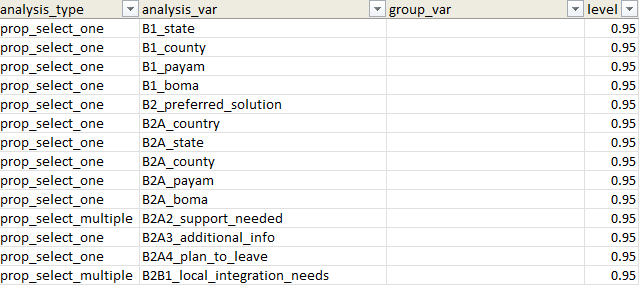
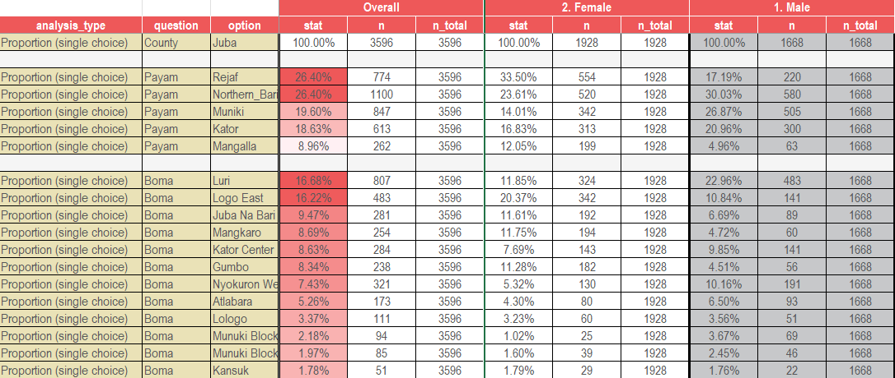
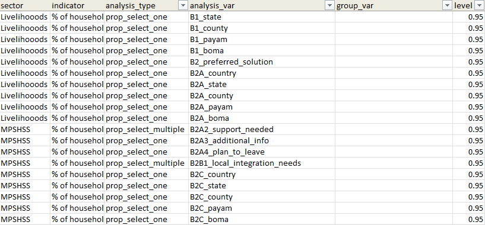
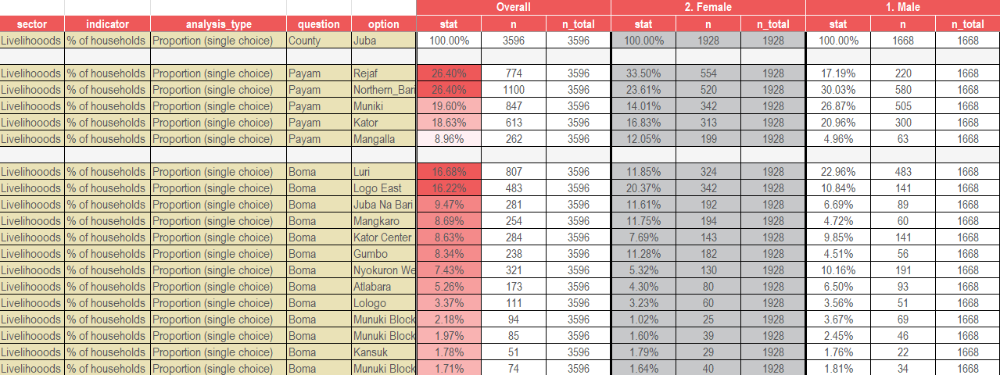

Data Analysis
data-analysis.RmdThe extrar package takes the headache out of complex
survey data analysis by automatically processing multiple grouping
variables at once and seamlessly mapping metadata (like sectors and
indicators) straight from your List of Analysis (LOA) into the final
output.
Step 1: Prepare the List of Analysis (LOA)
Create or load your LOA file. It must contain these columns:
| Column | Description |
|---|---|
analysis_type |
Type of analysis (e.g. prop_select_one,
mean) |
analysis_var |
The variable to analyse |
group_var |
Leave blank — populated automatically by the pipeline |
level |
Confidence level, e.g. 0.95
|
Note on Metadata: You can include optional metadata
columns such as sector, indicator, and
sub_indicator directly in your LOA file. These extra
columns will be automatically joined to the results when you pass their
names via the extra_columns argument in Step 2. Look at the
examples below for more information.
library(readxl)
loa <- read_excel("path/to/loa.xlsx")
# Define the grouping variables (Overall must come first)
grouping_variables <- c("Overall", "gender", "female_hoh")Step 2: Run the Analysis Pipeline
run_group_analysis_pipeline() loops over every grouping
variable and produces a single combined wide dataset.
library(extrar)
group_analysis <- run_group_analysis_pipeline(
dataset = my_dataset,
loa = loa,
group_variables = grouping_variables,
tool_survey = tool_survey,
tool_choices = tool_choices,
weight_column = "weights",
strata_column = "sample_location",
extra_columns = c("sector", "indicator", "sub_indicator") # optional
)
# Access the combined results
group_analysis$combined_resultsStep 3: Export a Formatted Excel Output
format_my_xlsx_variable_x_group() takes the combined
results and writes a styled Excel file.
- If
insert_empty_rows = TRUE, a blank separator row is inserted after every block of related questions. -
empty_rows_colcontrols which column defines the grouping for blank row insertion. It defaults to"analysis_var"(renamed to"question"in the output), since all rows for a given question share the same value.
format_my_xlsx_variable_x_group(
table_group_x_variable = group_analysis$combined_results,
file_path = "output/analysis_output.xlsx",
insert_empty_rows = TRUE,
empty_rows_col = "analysis_var", # groups rows by question block
overwrite = TRUE
)Examples
Below are examples of how the LOA translates into the final formatted Excel output.
1. Basic Analysis (Without Extra Columns)
When running the pipeline with standard analysis types and no extra metadata columns:


Left: Basic LOA input. Right: Resulting formatted Excel output.
2. Advanced Analysis (With Extra Columns)
When passing metadata columns (like sector and
indicator) via the extra_columns argument,
they are neatly preserved and arranged in the final output block:


Left: LOA with sector/indicator columns. Right: Output featuring those extra columns mapped correctly.